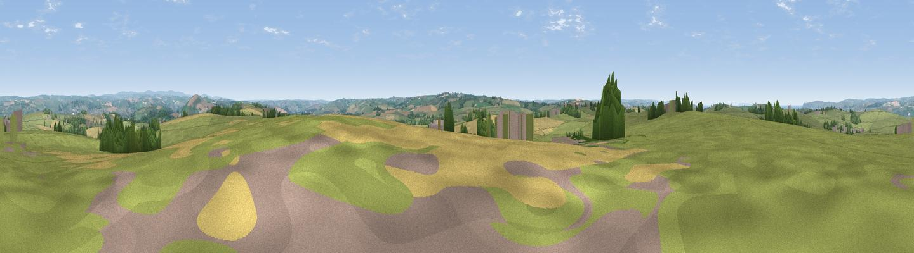

Prospect Hill
#15489 in England · top 32% of its area beats it · near Newton TraceyWhere it is
The exact computed spot (SS 52913 28361). Click the marker for map links.
The view, rendered

A 360° render of this exact spot computed from the terrain model, tree cover and land cover — summer colours, afternoon light, calibrated against photographs of famous viewpoints. Real trees, hedges and buildings will differ in detail.
The panorama
Grey silhouette: terrain skyline in each direction (720 bearings, Earth curvature and refraction included). Dashed green: skyline with trees (+15 m) and buildings (+8 m) as obstacles. Blue strip: how far the ground is visible on each bearing.
Where the view opens
Wedge length = distance to the farthest visible ground on that bearing (vegetation-aware). Rings at 10, 25 and 50 km.
What fills the view
74% grassland · 17% cropland · 7% woodland · 1% built-up ·
Angular shares of the visible panorama (visual magnitude), not map area. Landscape diversity 0.35 (0–1 Shannon).
Key numbers
More beautiful places nearby
The staircase of upgrades: each row has a higher view potential than everything closer. Driving times are estimates from straight-line distance, calibrated against real road routing — check an actual route before setting out.
| Place | Direction | Drive | Score |
|---|---|---|---|
| Viewpoint near Eastacombe | NNE · 2 km | ~6 min | 57.6 |
| Viewpoint near Newton Tracey | W · 3 km | ~7 min | 58.3 |
| Viewpoint near Yelland | NW · 4 km | ~9 min | 60.6 |
| Viewpoint near Yelland | WNW · 4 km | ~10 min | 72.6 |
| Viewpoint near Bishop's Tawton | ENE · 5 km | ~11 min | 73.8 |
| Codden Hill | ENE · 5 km | ~12 min | 81.3 |
| Viewpoint near Croyde | NW · 13 km | ~24 min | 83.7 |
| Viewpoint near Woolacombe | NNW · 15 km | ~27 min | 84.7 |
51.03573, -4.09919 · source: dobih hill · position refined by local search. Computed location — check access rights before visiting.